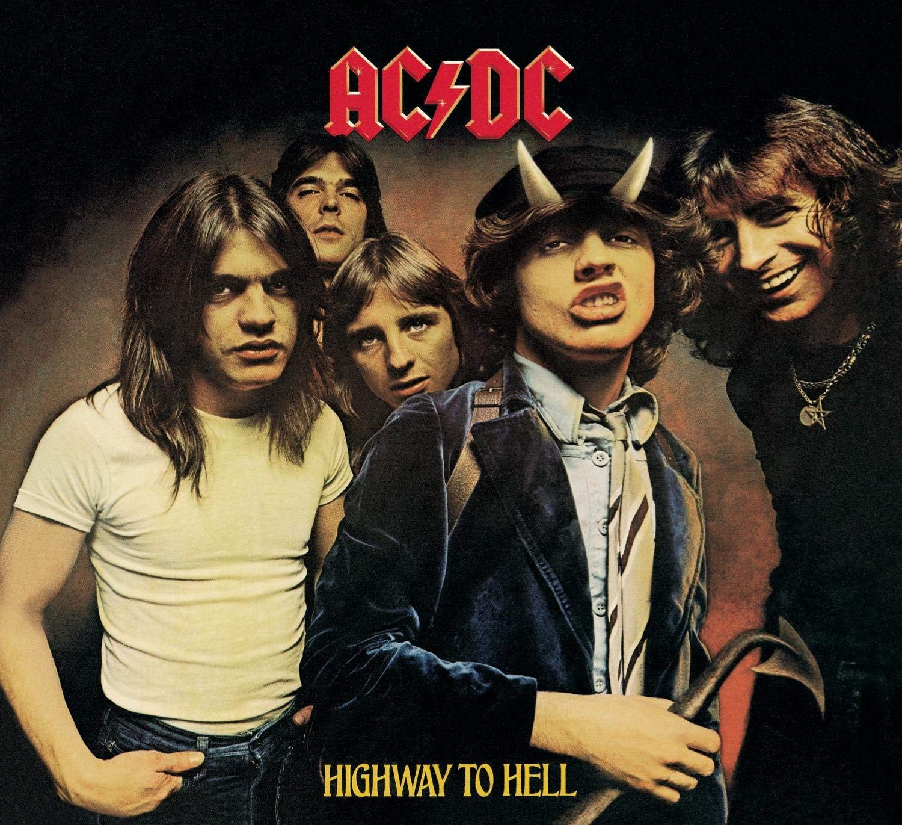

Since 1975, the Australian band have churned out album after album full of scorched-earth, metallic hard rock which has rarely deviated from a template of headbanging-inducing guitar riffs, flashy drums and banshee-yell vocals. In the process, AC/DC have carved out a niche somewhere between hard rock and heavy metal that's been an inspiration to aspiring musicians—and given us crank-up-the-volume radio staples "Back In Black," "Highway to Hell" and "You Shook Me All Night Long."
AC/DC lead guitarist Angus Young had a leg up on other teenagers with rock & roll dreams. First and foremost, he had a great role model in older brother George Young, a member of the Easybeats, an act which had the British Invasion-inspired hit "Friday On My Mind." Another older brother, guitarist Malcolm Young, had designs on starting a no-frills, straightforward hard rock band—and, even better, he absolutely wanted his charismatic younger sibling to be involved.
Malcolm and Angus Young settled on the suitably rock star-esque moniker AC/DC and played their debut show at a Sydney, Australia, club on New Year’s Eve 1973. Things got serious rather quickly: In 1974, vocalist Bon Scott, drummer Phil Rudd and bassist Mark Evans replaced early members Dave Evans, Rob Bailey and Peter Clack, and Angus Young started wearing his trademark stage wear, a schoolboy uniform. The next year, AC/DC released two Australia-only albums, High Voltage (1976) and T.N.T. (1975).
In hindsight, AC/DC's confidence was in place from day one. These albums not only contained songs which remain in the band's setlist—in particular, the fist-pumping "High Voltage" and "T.N.T."—but they also featured glam's flamboyance and energetic, unusual detours such as the bagpipe-augmented "It's a Long Way to the Top (If You Wanna Rock 'n' Roll)."
Yet T.N.T.'s smoking take on Chuck Berry's "School Days" better underscores AC/DC's unique alchemy. Although predisposed toward hard rock, both Young brothers had great reverence for classic rock & roll and blues greats. Accordingly, drummer Rudd ably split the difference between these styles with aggressive grooves and a laid-back swing. In Bon Scott, meanwhile, the band had a singer with a voice infused with gravel, grit and bad attitude.
AC/DC's music and approach had a worn-in, scruffy vibe that stood in stark contrast to the pretentiousness suffusing much rock music at the time. In fact, they reveled in being the underdog: The hilarious "Big Balls," from 1976's Dirty Deeds Done Dirt Cheap, deflates the self-importance of the rich and elite by not-so-subtly mocking their egos and snobbishness.
That same year, AC/DC nabbed a worldwide record deal. This led to the release of 1977's Let There Be Rock and 1978's Powerage, as well as the band starting to make inroads in the U.S. Bassist Cliff Williams also joined in mid-1977, replacing Mark Evans.
That heightened profile culminated in 1979's Highway To Hell: Produced by with Mutt Lange, the LP was more polished. But as the title track so plainly states, AC/DC had no plans to abandon their reckless, provocative ways.
Early in 1980, however, tragedy struck: Scott died on February 19, after a night of drinking. AC/DC decided to power forward with Newcastle, England, vocalist Brian Johnson at the helm. The newly reconfigured group channeled their grief into songwriting, and reunited with Lange for 1980's Back In Black.
The LP was an immediate smash, reaching platinum status by the end of the year and spawning the classics "You Shook Me All Night Long," "Back in Black," "Shoot to Thrill" and "Hells Bells." Johnson's voice had a similar timbre to Scott's, but he had a slightly cleaner tone that (improbably) made AC/DC sound even more massive than they had previously.
Throughout the rest of '80s and into the '90s, AC/DC were as reliable as taxes and the postal service as they delivered record after record overflowing with headbanging anthems and monstrous riffs. Their popularity increased exponentially, and they rose to headliner status on huge festivals such as Rock In Rio and Donnington, England's Monsters of Rock.
Decades later, AC/DC continues to influence aspiring guitarists and metalheads alike. Back In Black is now 22 times platinum, and the group toured baseball stadiums in the U.S. in 2015. In fact, even Johnson bowing out of the group in 2016 due to hearing loss hasn't stopped the band: The troupe enlisted Guns n' Roses frontman Axl Rose for tour dates in Europe and the U.S.
Inductees: Brian Johnson (vocals; born October 5, 1947), Phil Rudd (drums; born May 19, 1954); Bon Scott (vocals; born July 9, 1946, died February 19, 1980), Cliff Williams (bass; born December 14, 1949), Angus Young (guitar; born March 31, 1955), Malcolm Young (guitar; born January 6, 1953, died November 18, 2017)